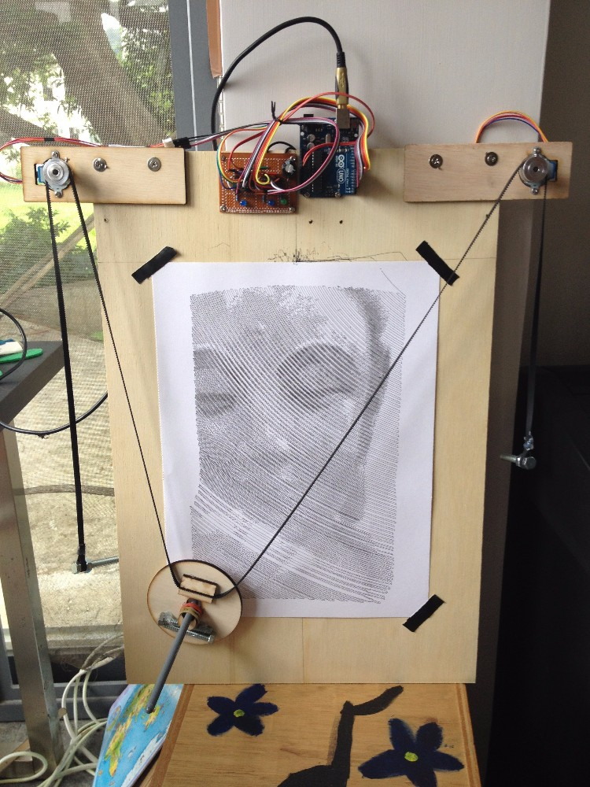
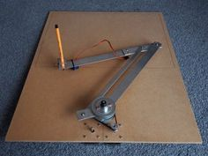
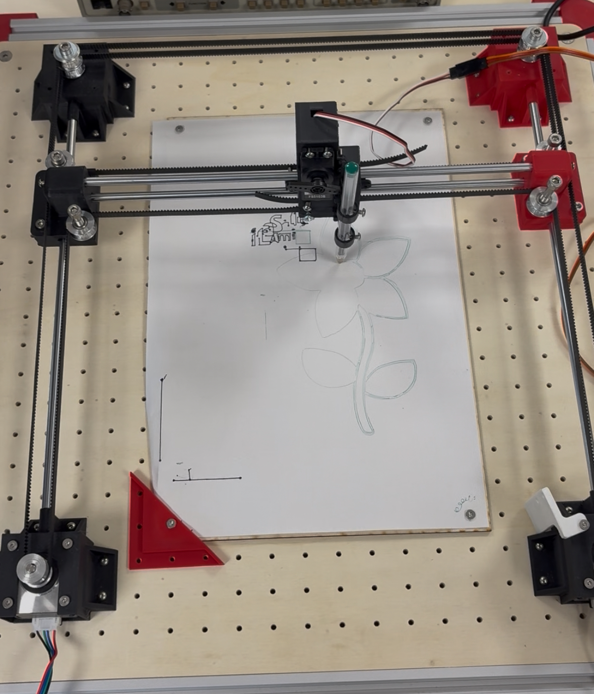

Études techniques
Analyse des différentes machines proposées
Au début du projet, nous avons analysé différentes architectures de machines à dessiner : les systèmes XY, les bras robotiques, les machines polaires verticales. Notre réflexion s'est concentrée sur trois solutions principales, chacune présentant des avantages et des contraintes spécifiques.
Le bras robotique se distingue par sa compacité au sol et sa polyvalence, lui permettant de couvrir une zone de travail circulaire étendue et d'atteindre des coordonnées complexes avec une grande agilité. Toutefois, sa mise en œuvre exige une gestion logicielle complexe. Contrairement aux machines cartésiennes guidées par des courroies rectilignes, le bras doit calculer de la trigonométrie en temps réel pour traduire de simples lignes droites en angles de rotation de ses moteurs.
De plus, il présente un manque de rigidité structurelle en extrémité de bras dû à un fort effet de levier lorsqu'il se tend. Ce phénomène est grandement amplifié par la flexibilité des matériaux imprimés en 3D . Un minuscule écart mécanique au niveau de l'épaule se répercute en plusieurs millimètres d'erreur une fois arrivé à l'outil, ce qui nuit gravement à la précision et à la répétabilité du tracé lors des changements rapides de direction. C'est d'ailleurs pour cela que nous avons décidé de ne pas choisir cette machine. La complexité du code est beaucoup trop élevée et nos profils au sein de l'équipe ne correspondent pas du tout à ce genre de défi informatique.Programmer et calibrer une cinématique inverse stable à partir de zéro représente un défi informatique , qui expose le projet à un risque d'erreurs logicielles permanent.
La machine polaire verticale est une solution très ingénieuse et très visuelle. Elle s'installe directement sur un mur ou un tableau vertical. Son fonctionnement est assez simple : l'outil de dessin est suspendu au milieu de deux fils (souvent des courroies) reliés à deux moteurs fixés en haut de la surface. En tendant ou en relâchant ces fils, la machine déplace le stylo. C'est une option très pratique si on veut dessiner sur des surfaces gigantesque sans avoir à fabriquer un châssis lourd . Mécaniquement, la gravité est sa pire ennemie. Comme la tête de dessin est juste suspendue, elle manque cruellement de rigidité. Plus l'outil descend vers le bas ou s'approche des bords, plus les fils se détendent et la précision s'effondre. De plus, le stylo a tendance à osciller et à se balancer comme un pendule lors des changements de direction rapides. C'est d'ailleurs pour cela que nous avons décidé de ne pas choisir cette machine. Bien que le concept vertical soit très séduisant pour sa grande surface de travail, les compromis sur la précision ne correspondent pas du tout à nos attentes . Calibrer la tension des fils et coder la géométrie polaire à partir de zéro demande une expertise informatique et des heures de réglages qui nous auraient fait perdre un temps précieux. Nous préférons rester sur une cinématique cartésienne plus classique, bien plus fiable et accessible pour nous. on bon fonctionnement.


Le choix de notre machine
Nous avons finalement opté pour la machine XY, une architecture qui répond parfaitement à nos exigences de précision. Grâce à un guidage par courroies élastiques, le système limite les vibrations et garantit un tracé net, fidèle aux coordonnées numériques. Ce choix est également stratégique sur le plan de la programmation : la machine repose sur un système de coordonnées cartésiennes accessible, nous permettant de nous concentrer sur la partie mécanique plus complexe. Cette complexité mécanique n'a pas été un frein pour notre équipe, bien au contraire. Composé de membres passionnés par la conception et la mécanique, notre groupe a vu dans cette machine l'opportunité de mettre à profit nos compétences. Ce choix architectural s'est donc révélé être une décision stratégique, parfaitement alignée avec nos forces et nos intérêts techniques.
Nos tests ont confirmé la pertinence de cette solution, notamment par la régularité du tracé. Le maintien du stylo en position parfaitement verticale assure un débit d'encre constant sur toute la surface de la feuille, tandis que la machine fait preuve d'une grande fiabilité en conservant ses réglages après le calibrage initial.

Tableau comparatif

Choix final
Après analyse de ces différentes technologies, nous avons choisi de développer la machine CoreXY car elle offre le meilleur compromis entre une précision de tracé parfait et un système de programmation accessible.